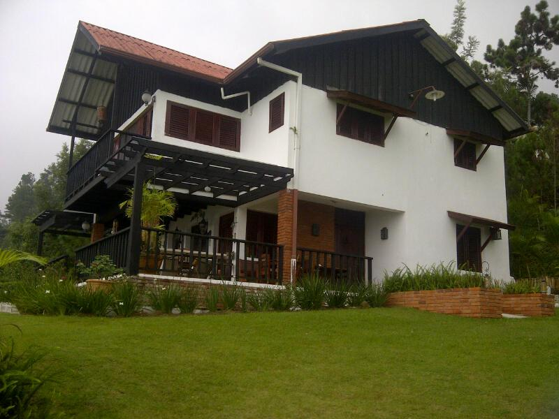

Case Study: Campus One 
Document Version : 0.0.0
Release Notes and Notices
Background: < May-2014
Plan vs Performance: > Nov-2014
Ideas & Issues: > Nov-2014
Plans Moving Forward: Nov-2014 >
Annexures
Case Study: Campus One
»
Index
Index